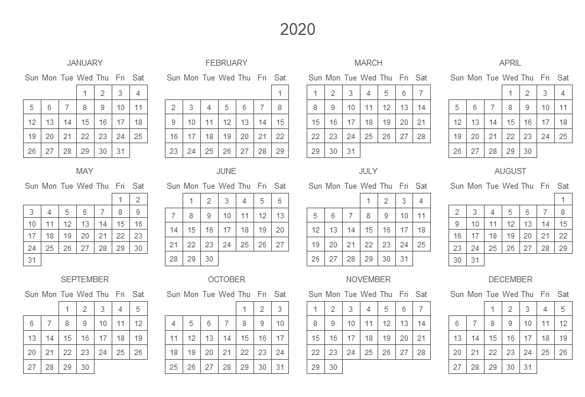
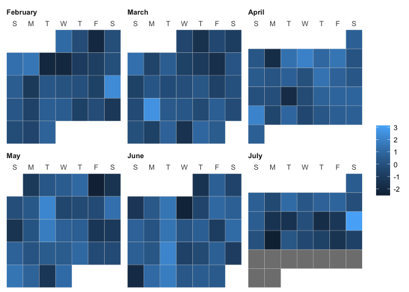
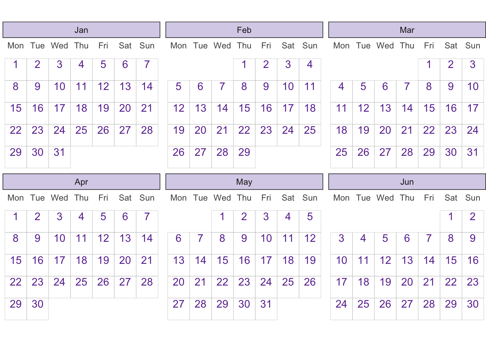

calendR(
year = format(Sys.Date(), "%Y"),
month = NULL,
from = NULL,
to = NULL,
start = c("S", "M"),
orientation = c("portrait", "landscape"),
title,
title.size = 20,
title.col = "gray30",
subtitle = "",
subtitle.size = 10,
subtitle.col = "gray30",
text = NULL,
text.pos = NULL,
text.size = 4,
text.col = "gray30",
special.days = NULL,
special.col = "gray90",
gradient = FALSE,
low.col = "white",
col = "gray30",
lwd = 0.5,
lty = 1,
font.family = "sans",
font.style = "plain",
day.size = 3,
days.col = "gray30",
weeknames,
weeknames.col = "gray30",
weeknames.size = 4.5,
week.number = FALSE,
week.number.col = "gray30",
week.number.size = 8,
monthnames,
months.size = 10,
months.col = "gray30",
months.pos = 0.5,
mbg.col = "white",
legend.pos = "none",
legend.title = "",
bg.col = "white",
bg.img = "",
margin = 1,
ncol,
lunar = FALSE,
lunar.col = "gray60",
lunar.size = 7,
pdf = FALSE,
doc_name = "",
papersize = "A4"
)The Problem with Wrapping
Wrapper functions make performing complex tasks easier by abstracting away underlying implementation details. Multiple conceptually distinct sub-tasks wrapped together under a single interface are often referred to as helper functions. In the context of ggplot2, plot helper functions can be considered all-in-one ggplot printers.1
Unlike lists of ggplot2 components2, plot helper functions are not limited to storing reusable ggplot2 layers or components. In addition to defining plot components, plot helper functions perform preparatory tasks like reshaping data or calculating additional variables needed to create a particular ggplot. The flexibility of helper functions makes them an appealing solution for reusing ggplot2 recipes. However, the unconstrained flexibility of plot helper functions is somewhat of a dangerous design vacuum. The design of interface and arguments is left completely to the author of the helper function.
Same Same but very Different: Variation in Helper Interfaces
The lack of design constraints results in quite varied and opaque interfaces that often obscure the elegant grammar of ggplot2 behind plot-specific arguments. For example, consider the following three interfaces for producing calendar plots in R. Can you tell:
- which of these functions use
ggplot2? - what data, if any, are required from the user?
- what data preparation steps are performed within the function?
- what
ggplot2components were used to construct the ggplots? - what additional
ggplot2components are compatible with the returned plots? - which standard
ggplot2functions liketheme()orlabs()the plot helper arguments are passed to?
NoteShow Examples: Calendar Plot Helpers

- Package Repo: https://github.com/R-CoderDotCom/calendR
- Function Reference: https://rdrr.io/cran/calendR/src/R/calendR.R
ggweek_planner(
start_day = lubridate::today(),
end_day = start_day +
lubridate::weeks(8) - lubridate::days(1),
highlight_days = NULL,
week_start = c("isoweek", "epiweek"),
week_start_label = c("month day", "week", "none"),
show_day_numbers = TRUE,
show_month_start_day = TRUE,
show_month_boundaries = TRUE,
highlight_text_size = 2,
month_text_size = 4,
day_number_text_size = 2,
month_color = "#f78154",
day_number_color = "grey80",
weekend_fill = "#f8f8f8",
holidays = ggweekly::us_federal_holidays,
font_base_family = "PT Sans",
font_label_family = "PT Sans Narrow",
font_label_text = NULL
)- Package Repo: https://github.com/gadenbuie/ggweekly
- Function Reference: https://rdrr.io/github/gadenbuie/ggweekly/man/ggweek_planner.html

{kind=link}
ggcal(dates, fills)- Package Repo: https://github.com/jayjacobs/ggcal
- Function Reference: https://rdrr.io/github/jayjacobs/ggcal/man/ggcal.html

It is almost impossible to determine the answers to the above questions without digging into the source code. These helper functions abstract away the grammar of graphics, replacing complex but powerful ggplot2 syntax with three different plot-specific function interfaces and plot-specific arguments. Hiding away the specifics of ggplot2is necessary to achieve the convenience of producing a complete plot with a single function. However, it comes at the cost of making customisation more difficult. Moreover, attempts to add customisation options to plot helper functions generally negatively impact user experience.
Bloat Alert: Plot Specific Arguments
Although all the above functions return ggplot objects, they offer three completely different interfaces for customisations. Instead of adding ggplot2 components with consistent syntax and behaviours, users must learn plot-specific arguments such as font.family or font_base_family. Both of these arguments are passed through to similar element_text() calls within calendR::calendR() and ggweekly::ggweek_planner().
Plot-specific arguments create unnecessary work for both the function developer and end users. The developer finds themselves maintaining an ever-expanding list of pass-through arguments for customisation, while users quickly finds they need to understand both the plot-specific interface and the underlying ggplot2 recipe to implement and/or debug even minor plot customisations. In a sense, the code lines that seemed to be “saved” by wrapping the original ggplot recipe into a helper function are in fact just transferred to “lines” in the argument list.
A rather advanced, but infinitely more elegant alternative to bloating a plot function with plot-specific arguments is to instead create new ggplot2 components. More specifically, you could consider designing new geometries, statistics, coordinates, scales, themes etc. using ggplot2’s internal object-orientated system: ggproto. Extending ggplot2 in this manner is not for the faint-hearted though. To do it well, you probably should read and fully understand the textbook, The Grammar of Graphics by Leland Wilkinson, and also have pretty advanced R programming skills. For evidence of the extensive design thinking required see this version of the README for {ggcalendar} by Gina Reynolds (@EvaMaeRey).
If you’re interested in learning more about the pitfalls of adding customisation options to plot helpers, and how and when you might want to take on the challenge of adding new grammar components to ggplot2, see this companion post, Why I don’t add style options to my ggplot2 functions by Mitchell O’Hara-Wild. In the post, Mitchell talks about why he almost always refuses requests to add customisation options for plot helpers like fable::gg_season() and the autoplot.forecast() method for forecast objects created by the package {forecast}, and how he designed geom_forecast().
Design Goals for Plot Helpers
For now, let’s assume we don’t have the time, skill, or appetite to write new ggproto objects. Wouldn’t it be nice to have some unifying design principles to follow when writing helper functions to reuse ggplot2 recipes? Ideally, a well-designed plot helper function would:
- offer the convenience of single-command plotting,
- avoid plot-specific customisation arguments,
- expose a “sensible” amount of internal ggplot2 recipe,
- expose ggplot2 error messages rather than function specific errors for debugging purposes,
- integrate in predictable ways with additional ggplot2 components.
Case Study: {ggtilecal}
I recently encountered this design dilemma when packaging up code I had written to make ggplot2 calendars with interactive tiles. The most generalisable solution was probably to map the calendar layout to the grammar of graphics, and create new ggplot2 components as required.
Unfortunately, it turns out defining a specialised plot composition system for temporal plots requires working through some mind-bogglingly complex quirks of time and calendars3, and that’s before we get to all the complexities of ggproto, so implementing new ggplot2 components was not an option for me.4
In the end, I had to write a plot helper function, which now lives in the package {ggtilecal}. However, I managed to achieve most of the above design goals through a combination of modularisation and opinionated interface design. My solution, and the design I think most ggplot2 helper functions should follow, was to:
- separate data transformation steps from ggplot construction
- expose as many components of the
ggplot2recipe as possible - minimise the number of plot-specfic arguments by using lists of components to accept ggplot2 customisation options
- explicitly document the internal workings of the helper function
As an aside, the utility of this style of solution is not limited to writing ggplot2 helper functions. Modularisation and clearly defined sub-functions are good practices for writing any helper function. However, the conceptual and technical complexity of ggplot2 and the grammar of graphics make the consequences of poorly designed helper functions more acute.
Another ggplot2 recipe for a calendar layout
The original ggplot2 recipe that I wanted to package up involved:
- data import (not shown, completed via
source()call) - data wrangling:
- reshaping (e.g. via
reframe()) - creating new variables (e.g. using
countrycodeto get emojis for each country) - adding missing days (i.e. non-travel days)
- calculating faceting and layout variables (e.g.
Month,Month_week)
- reshaping (e.g. via
ggplot2components:- scale, coord and facets to layout the calendar
- theme modification to style the plot as a calendar
- interactive geoms from
{ggiraph}
The code I wrote was heavily adapted from the ggplot calendar packages shown above, and this code for a Tidy Tuesday plot by Nicola Rennie (@nrennie).
In accordance with the design principles above, for the package {ggtilecal}, I split up the code above into different types of functions with specific jobs:
- Data preparation helpers to fill in missing days and calculate layout variables. These helpers take data frames, do something to them, and return data frames.
- Plot helper function for ggplot2 recipes with component arguments for specific calendar layouts. These functions take in data and output a ggplot, but achieve the design aims above through component arguments and explicit documentation of the internal ggplot2 recipe.
- A Custom ggplot2 theme for calendar layouts
See the Function Reference for {ggtilecal} for details on the data preparation helpers and theme function.
Anatomy of a Well-Designed Plot Helper
Let’s dissect my attempt at writing a plot helper that meets my lofty and opinionated design goals. gg_facet_wrap_months() calls the relevant data preparation helpers and constructions a sensible looking default calendar plot with monthly facets.
Inputs: List Arguments for Plot Components
The final helper interface design in ggtilecal has notability fewer arguments than the functions from calendR and ggweekly above. The interface has a few plot-specific arguments (locale, week_start, nrow, ncol) which are used to calculate variables for the “fixed” layout components of the ggplot. However, the design retains ggplot syntax through the component list arguments .geom, .scale_coord, .theme and .other.
Plot Helper Interface
gg_facet_wrap_months(
.events_long,
date_col,
locale = NULL,
week_start = NULL,
nrow = NULL,
ncol = NULL,
.geom = list(
geom_tile(color = "grey70", fill = "transparent"),
geom_text(nudge_y = 0.25)
),
.scale_coord = list(
scale_y_reverse(),
scale_x_discrete(position = "top"),
coord_fixed(expand = TRUE)),
.theme = list(theme_bw_tilecal()),
.other = list()
)The component list arguments are initialised with sensible defaults, and inherit aesthetic mappings from the “fixed” internal components. The “fixed” components are the “improper” part of the solution, as they could probably be replaced by new ggplot2 Stat and Facet objects.
Internals: Data then Plot
List arguments bind together user inputs that all go into the same place inside the helper function (e.g. elements in .geom are added before .scale_coord, which comes before .theme and the final the catch-all .other). This design allow users to leverage the consistent syntax ggplot2 when specifying customisations. The user specified ggplot2 components are passed directly into the ggplot building portion of the helper function, avoiding the need for ad-hoc and plot-specific customisation arguments.
Plot Helper Body
gg_facet_wrap_months <- function(...){
## Data Helpers
cal_data <- .events_long |>
fill_missing_units({{ date_col }}) |>
calc_calendar_vars({{ date_col }})
## Plot Construction
base_plot <- cal_data |>
ggplot2::ggplot(mapping = aes_string(
x = "TC_wday_label",
y = "TC_month_week",
label = "TC_mday"
)) +
facet_wrap(c("TC_month_label"), axes = "all_x", nrow = nrow, ncol = ncol) +
labs(y = NULL, x = NULL) +
.geom +
.scale_coord +
.theme +
.others
base_plot
}The example below shows an example customisation using the component arguments:
Code for customising a static calendar plot
library(ggplot2)
library(ggtilecal)
make_empty_month_days(c("2024-01-05", "2024-06-30")) |>
gg_facet_wrap_months(unit_date,
.geom = list(
geom_tile(color = "grey70",
fill = "transparent"),
geom_text(nudge_y = 0.25,
color = "#6a329f")),
.theme = list(
theme_bw_tilecal(),
theme(strip.background = element_rect(fill = "#d9d2e9")))
)
This design also supports using geoms from other packages without depending on those packages directly, (i.e. ggiraph is not a dependency of ggtilecal). Additional layers can be included in the .geom, or added as normal using +:
Code for interactive calendar example
# remotes::install_github("cynthiahqy/ggtilecal")
library(ggiraph)
library(ggplot2)
library(ggtilecal)
gi <- demo_events_gpt |>
reframe_events(startDate, endDate) |>
gg_facet_wrap_months(unit_date) +
geom_text(aes(label = event_emoji), nudge_y = -0.25, na.rm = TRUE) +
geom_tile_interactive(
aes(
tooltip = paste(event_title),
data_id = event_id
),
alpha = 0.2,
fill = "transparent",
colour = "grey80"
)
girafe(ggobj = gi)Documentation: Exposing Internal Workings
In addition to exposing the ggplot2 components as list arguments, I also document the data preparation steps that the plot helper function is performing:
#' Make Monthly Calendar Facets
#'
#' Generates calendar with monthly facets by:
#' - Padding event list with any missing days via `fill_missing_units()`
#' - Calculating variables for calendar layout via `calc_calendar_vars()`
#' - Returning a ggplot object as per Details.and how the ggplot2 recipe works:
#' Returns a ggplot with the following fixed components using calculated layout variables:
#' - `aes()` mapping:
#' - `x` is day of week,
#' - `y` is week in month,
#' - `label` is day of month
#' - `facet_wrap()` by month
#' - `labs()` to remove axis labels for calculated layout variables
#'
#' and default customisable components:
#' - `geom_tile()`, `geom_text()` to label each day which inherit calculated variables
#' - `scale_y_reverse()` to order day in month correctly
#' - `scale_x_discrete()` to position weekday labels
#' - `coord_fixed()` to square each tile
#' - `theme_bw_tilecal()` to apply sensible theme defaults
#'and how to modify the plot:
#' To modify components alter the `.geom` and `.scale_coord`,
#' which inherit the calculate layout mapping by default
#' (via the ggplot2 `inherit.aes` argument).
#'
#' To add components use the ggplot `+` function as normal,
#' or pass components to the `.other` argument.
#' This can be used to add interactive geoms (e.g. from `ggiraph`)
#'
#' To modify the theme, use the ggplot `+` function as normal,
#' or add additional elements to the list in `.theme`.
#'
#' To remove any of the optional components,
#' set the argument to any empty `list()`Design Principles for ggplot2 Plot Helpers
To summarise my opinionated take on how you should write plot helper functions:
- Writing plot helper functions is an appealling solution for reusing long / complex
ggplot2recipes. - However, if not well designed and scoped, plot helper functions that “save” code lines in the short-term, can explode into highly specific and difficult to use custom interfaces in the long-term.
- To avoid reimplementing “saved” code lines as plot-specific arguments, when writing a plot helper consider:
- exposing plot components as list arguments with sensible defaults,
- calling separately defined data helpers before constructing the final plot,
- fully documenting the internal workings of the function.
Footnotes
There is lots of discussion online about the difference between wrapper and helper functions. I did my best to untangle it but feel free to air opinions about whether I’ve used the right terminology.↩︎
For a detailed explanation on using lists to store and reuse
ggplot2calls see this section in ggplot2: Elegant Graphics for Data Analysis (3e)↩︎These quirks are complex enough to warrant entire thesis chapters on them – see
{sugrrants}and{gravitas}, both from the NUMBATs group at Monash and supervised by my amazing supervisor Rob Hyndman↩︎Also, I have a thesis to finish, and this calendar plot thing was just a little side project.↩︎
Citation
BibTeX citation:
@online{tzuk2024,
author = {Tzuk, Omer},
title = {Design {Principles} for {Plot} {Helper} {Functions}},
date = {2024-05-25},
url = {https://omertzuk.github.io/posts/ggplot-helper-design/},
langid = {en}
}
For attribution, please cite this work as:
Tzuk, Omer. 2024. “Design Principles for Plot Helper
Functions.” May 25, 2024. https://omertzuk.github.io/posts/ggplot-helper-design/.